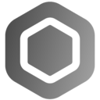
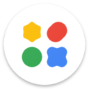
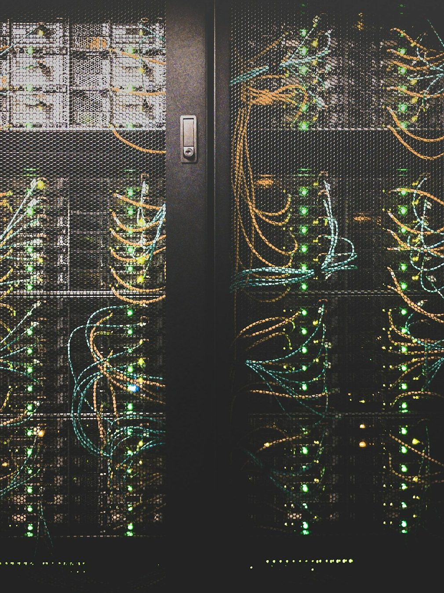

~/home/gabrielp/quick-facts/
Hi ! I'm Gabriel, an apprentice IT Infrastructure & Operations Specialist at Infomaniak Network SA, the friendly ethical cloud provider based in Geneva, Switzerland. A good part of my week goes into learning networking, development, judging big tech, and helping others use and enjoy technology, and I genuinely have fun doing so.
The rest goes into photography... mostly wildlife and the night sky. I'm also strongly advocating for free and open source software, and have a full homelab running Proxmox VE, Snowflakes, Immich, Docker and more self-hosted services than strictly necessary
I'm also a student at the CFPT, currently exploring machine learning, and the founder of the Olynthe Initiative, a small effort to support digital rights and FOSS.
~/home/gabrielp/dev/
I care about software that respects its users.
Here are a few things I built or contributed to.
-
JWStreak
dart / gpl-3.0 / jws.olynthe.org
A friendly Flutter app that helps people build a daily Bible-reading habit. Everything on-device, nothing leaves your phone.
-

BasaltOS
AlmaLinux-based operating system
Project leader on an independent open source operating system. Early days, big dreams.
-
The Olynthe Initiative
digital rights & free software
Founded to support digital rights and FOSS initiatives, and home of this very domain
-

Sky Map
android / astronomy
The original Google Sky Map, now run by its community: point your phone at the sky and it names the stars, planets and constellations. I chip in here and there.
-

Google AI Edge Gallery
android / on-device AI
Google's open-source playground for on-device AI: chat, image understanding and more, with models that run fully offline.
-

Tor Snowflakes
tor / anti-censorship
I run multiple Snowflake proxies: volunteer-powered Tor bridges that help people in censored countries reach the open web. Cheap to run, hard to block :)
~/home/gabrielp/pictures/
The Gear: Nikon D7000 | GoPro hero 12 | Pixel 9 Pro XL
Here are a few frames I like ! I deeply hope you'll like them too :)
All of these were shot by me with one of the gear mentionned above. More of my photos can be found on Instagram :)
~/home/gabrielp/tools/
What I reach for every day at work, in the homelab, and everywhere in between.
- Home Lab HardwareGMKtec K8 Plus AMD Ryzen™ 7 8845HS, RPi 5 (8 Go), RPi 3 (2 Go)
- DIYArduino Uno R3 x2, Arduino Nano x2
- ComputersToo many.
Primary: MacBookPro 2026 (M5 Pro) / Secondary: XPS 15 7590 & Omen Tower (forgot the name) - OSGrapheneOS // Cachy Linux // macOS // Debian Trixie
- MobilePixel 9 Pro XL, iPad Pro (M2), Quest 3, Pixel Watch 5
favorite groups (order matters!)
- PhonesGoogle Pixel, Fairphone, Nothing
- ComputersFramework, Apple, Dell
- CamerasNikon, Lumix, Fujifilm
- DIY boardsRaspberry Pi, Arduino, Flipper Zero
- IDEZed (Preview)

~/home/gabrielp/contacts/
I'm shy, but I don't bite. Please come say hi!
And kindly mention you came from this site, or I might assume you're a scammer (I started getting used to it sadly) :(
- GutHib@Hiburger
- Instagram@hello_iam_gabriel
- Redditu/Guy_From_The_Cloud
- YouTube@gabrielpaesano
- LinkedInin/gabriel-p
- Hugging Facethe-art-of-linux